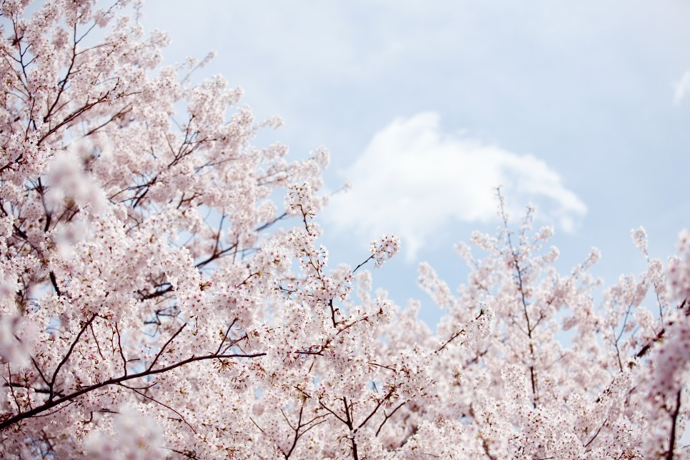

<h1>봄에 할 수 있는 것</h1><br>
<br>-벚꽃을 볼 수 있다.
<br>-<벚꽃엔딩>을 들으면 봄의 기운을 확실히 느낄 수 있다.
<br>-키위, 한라봉, 매실, 딸기, 복숭아 등 봄 제철 과일을 먹을 수 있다.
<br>-따뜻한 옷을 입을 수 있다.<p style="margin-top:80px;">

<h1>여름에 할 수 있는 것들</h1><br>
<br>-바닷가에서 수영하고 물놀이를 할 수 있다.
<br>-시원한 아이스크림이나 주스를 먹거나 마실 수 있다.
<br>-여름철 과일 수박, 복숭아, 자두, 체리, 살구 등을 먹을 수 있다.
